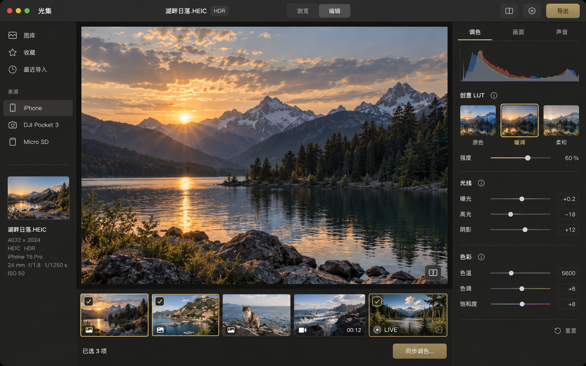
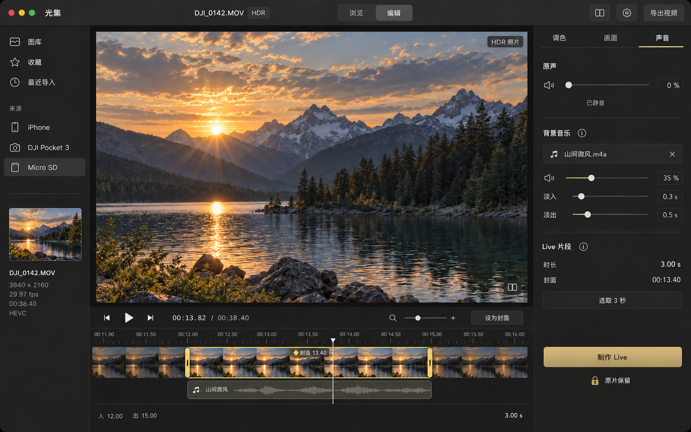
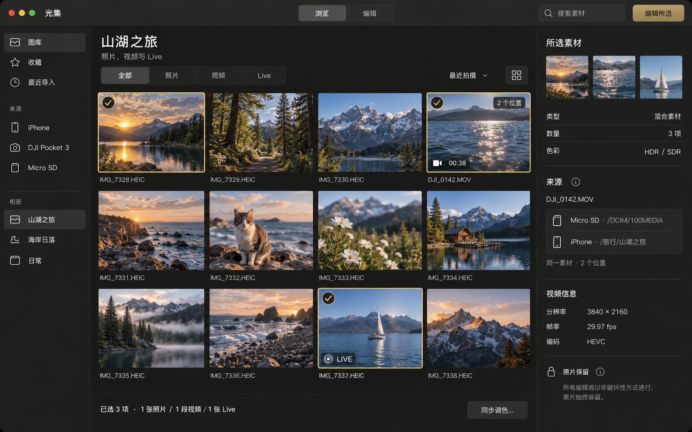

光集 / 视觉设计探索
调色与 Live，在一个工作台
统一深色表面 · 扁平参数布局 · 少量原生玻璃控件 · 摄影内容优先

调色工作台 — 大画面、风格缩略图、精简参数与术语说明入口；下方支持混合素材选择。
下载原图
视频与 Live — 入点、出点、播放头和封面分开表达；声音检查器与 BGM 轨道协作。原片保留为固定状态。
下载原图
素材浏览与多选 — 图片、视频、Live 统一选择；同一素材保留多个设备位置，进入编辑后可同步调色。
下载原图